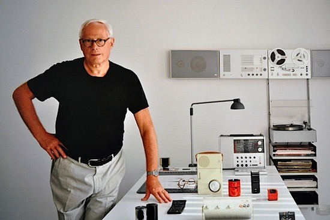

Dieter Rams is a German industrial designer who is most closely associated with the consumer products company Braun, the furniture company Vitsœ, and the functionalist school of industrial design.
Go back to Homepage